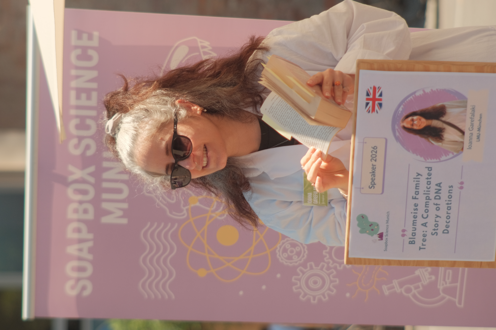
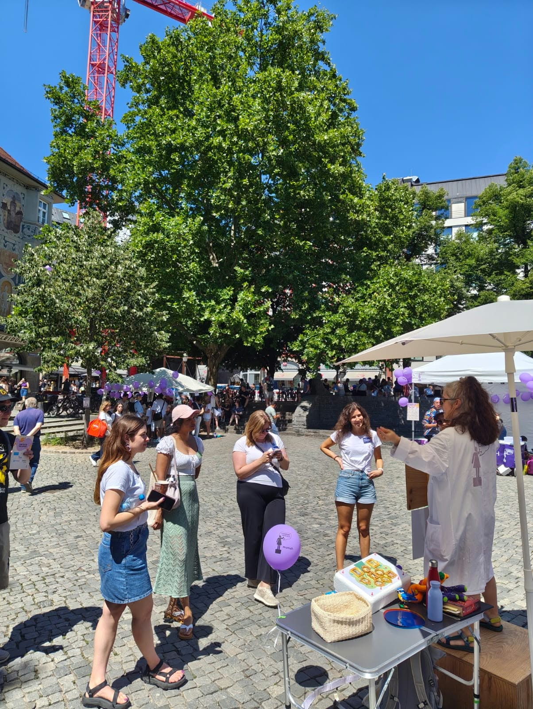
Soapbox Science Munich
Interactive public communication of evolutionary biology, genetics, epigenetics and DNA methylation using props and live demonstrations.
View event & photos →Selected public engagement, science communication and scientific presentation activities from my work in biology, evolution, genomics and astronomy.


Interactive public communication of evolutionary biology, genetics, epigenetics and DNA methylation using props and live demonstrations.
View event & photos →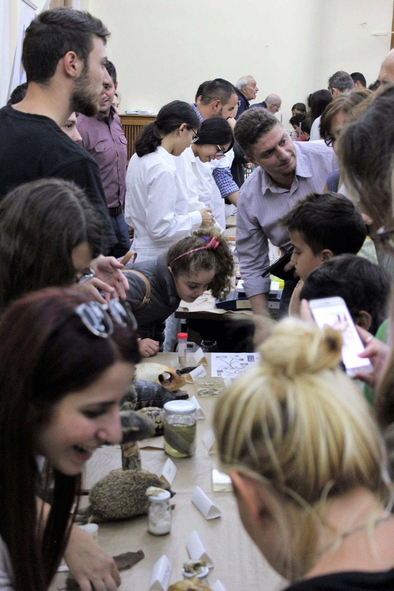
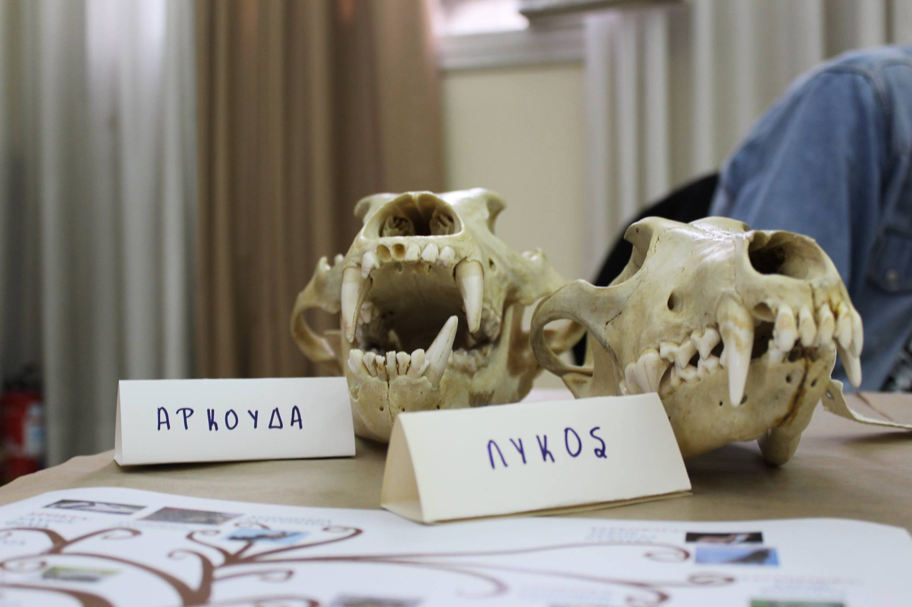
Hands-on public engagement around biology, molecular biology, genetics, evolution and biodiversity.
View event & photos →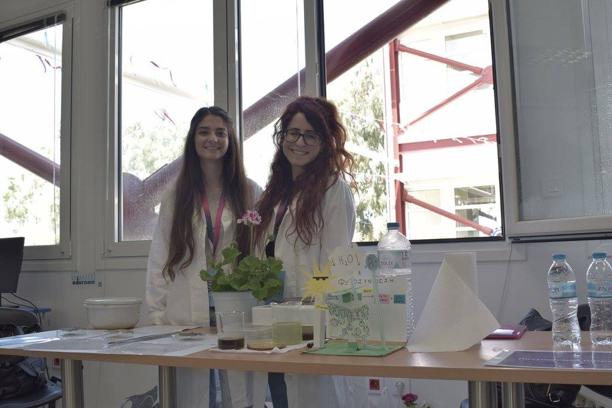
Public-facing biology activities designed to communicate scientific concepts to audiences with different scientific backgrounds.
View event & photo →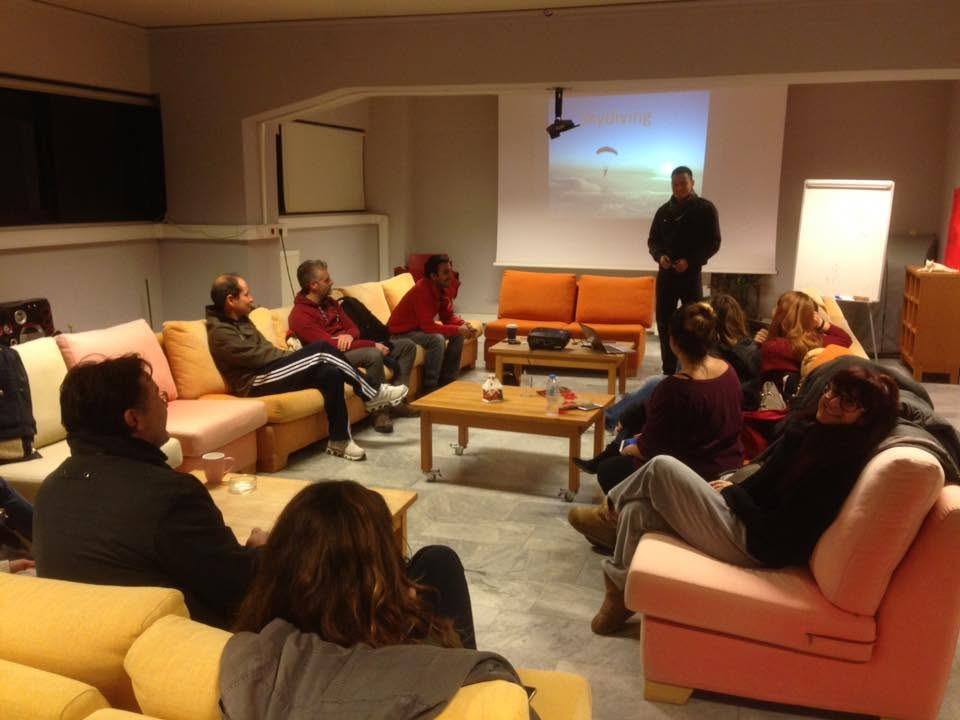
Public observational events, educational activities and stargazing sessions promoting astronomy and scientific literacy.
View event & photo →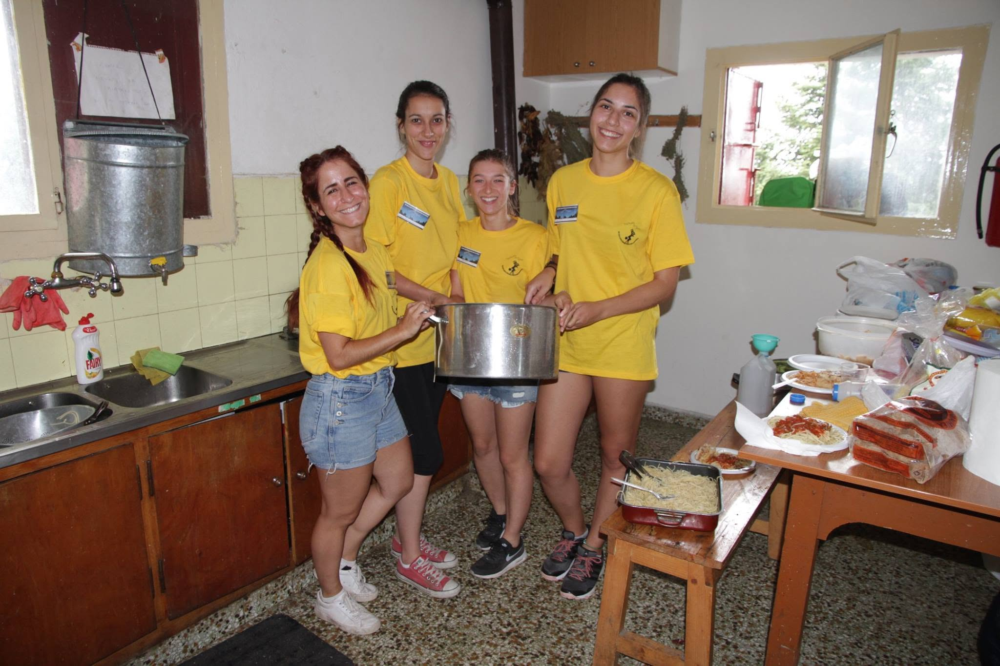
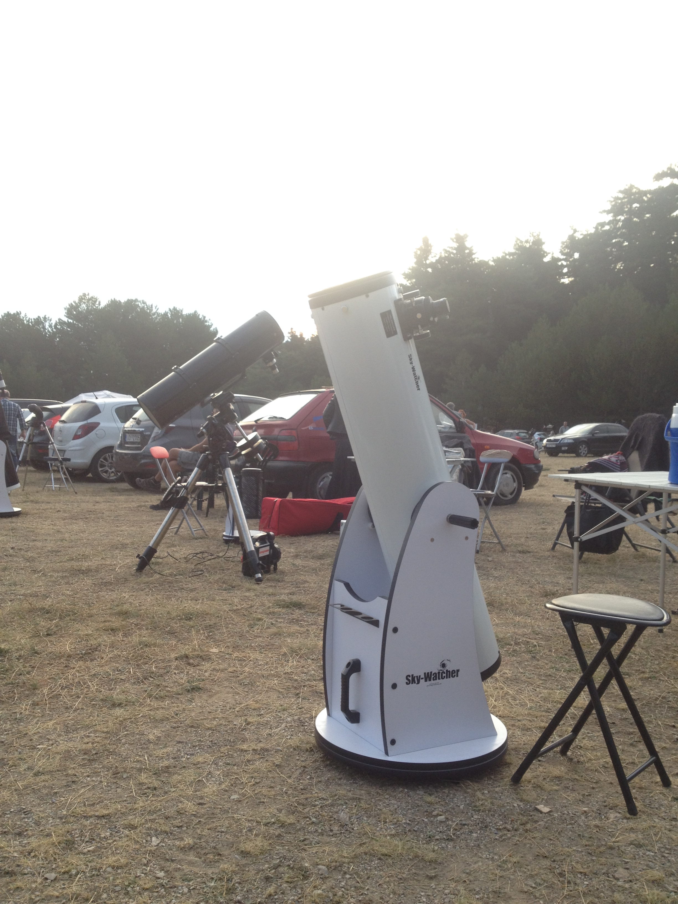
Supported the organisation and public-engagement activities of the national amateur astronomy gathering.
View event & photos →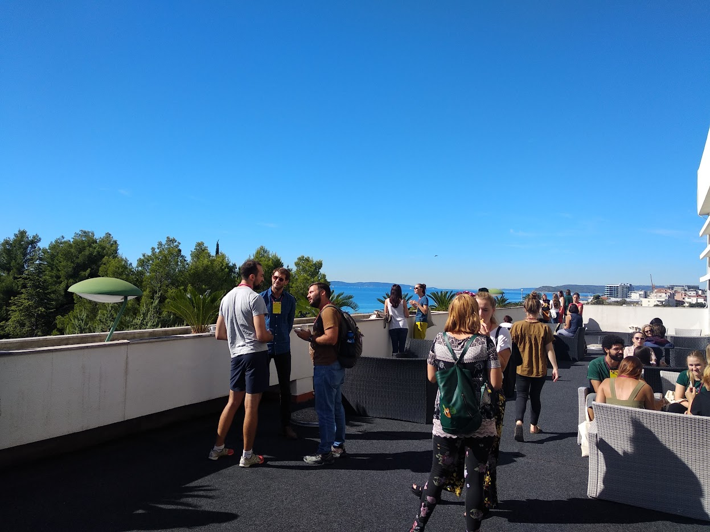
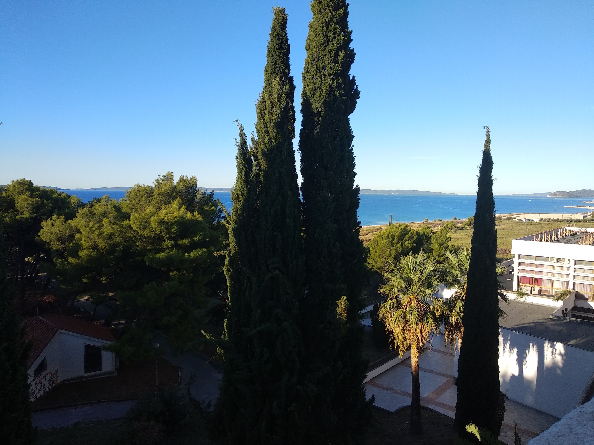
International meeting focused on evolutionary biology communication, education and engagement between science and society.
View event & photos →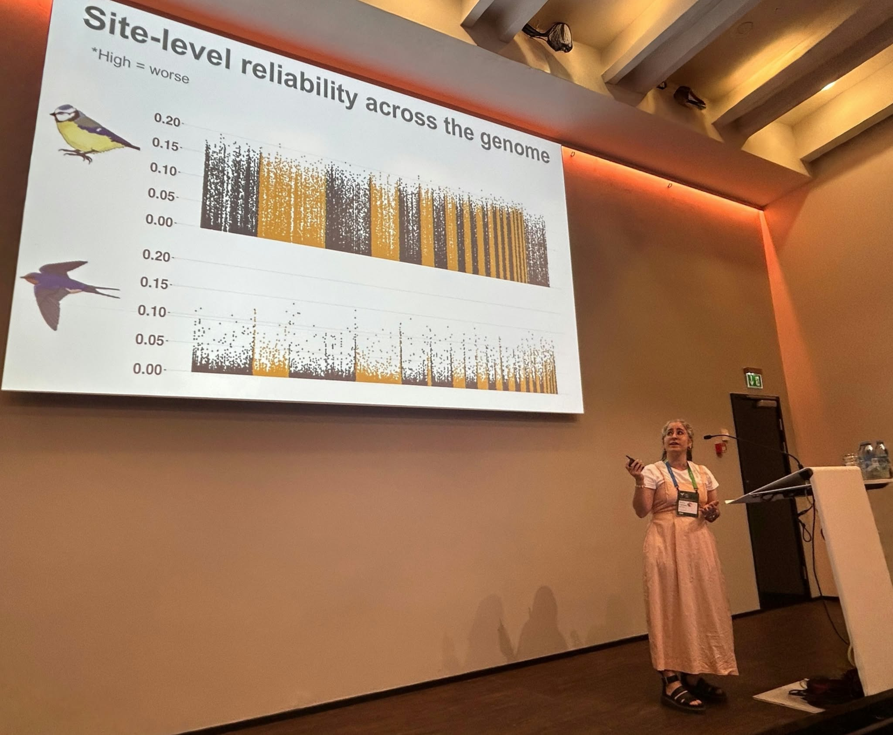
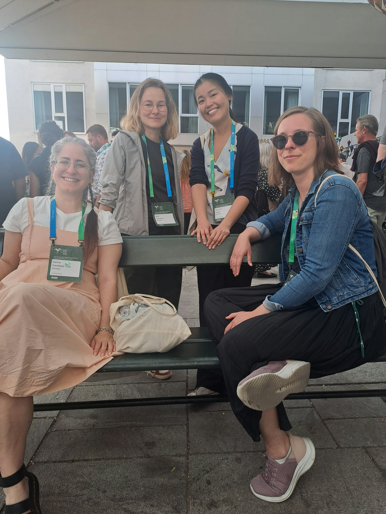
Presented “A statistical framework for DNA methylation repeatability in natural populations” at the annual Society for Molecular Biology & Evolution meeting.
View event & photos →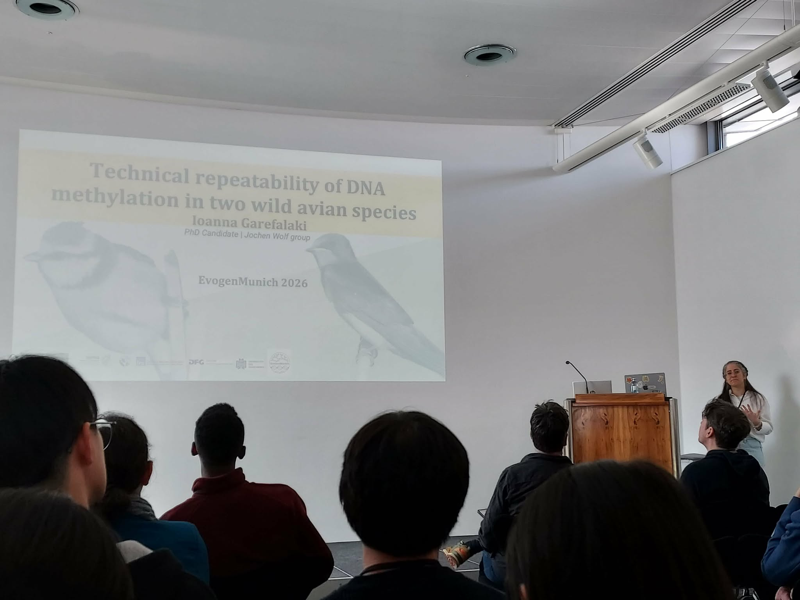
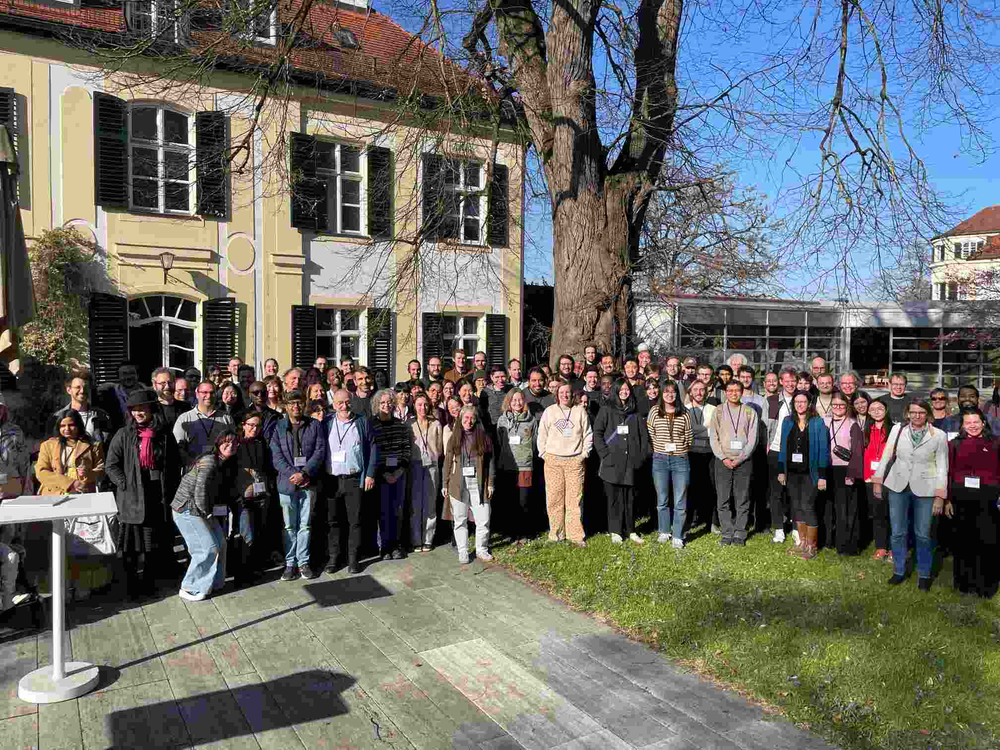
Presented research on the technical repeatability of DNA methylation in two wild avian species.
View event & photos →